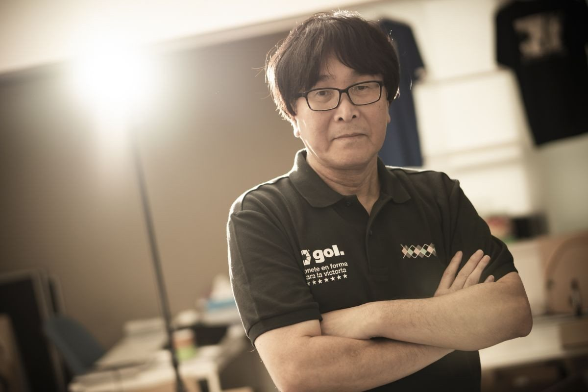
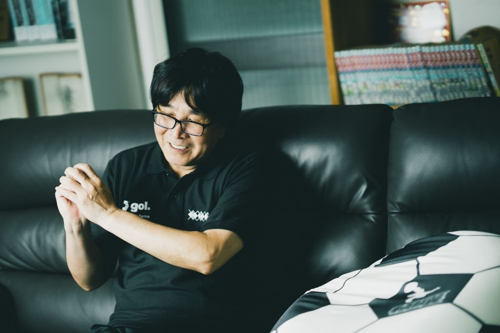
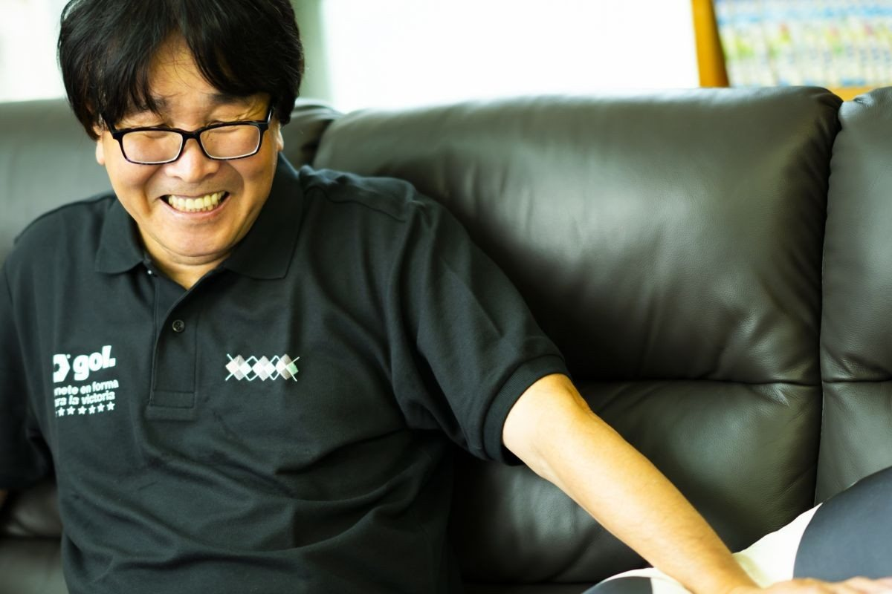
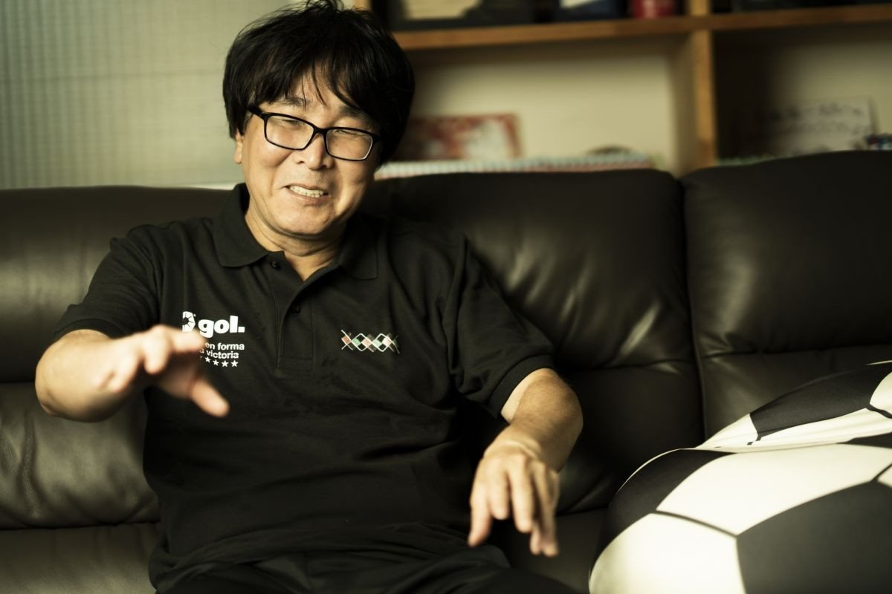
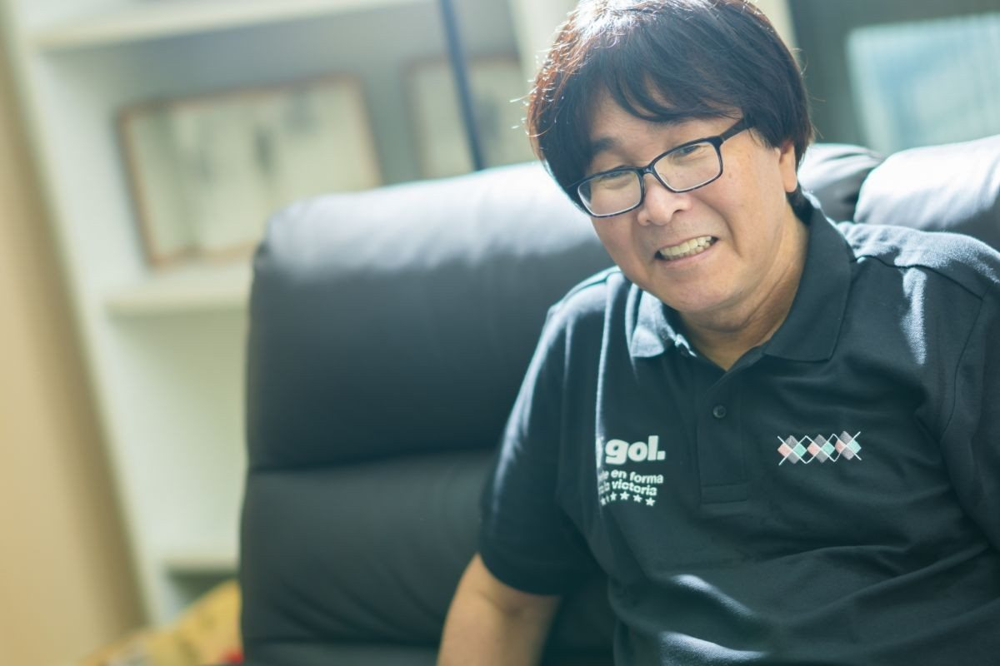
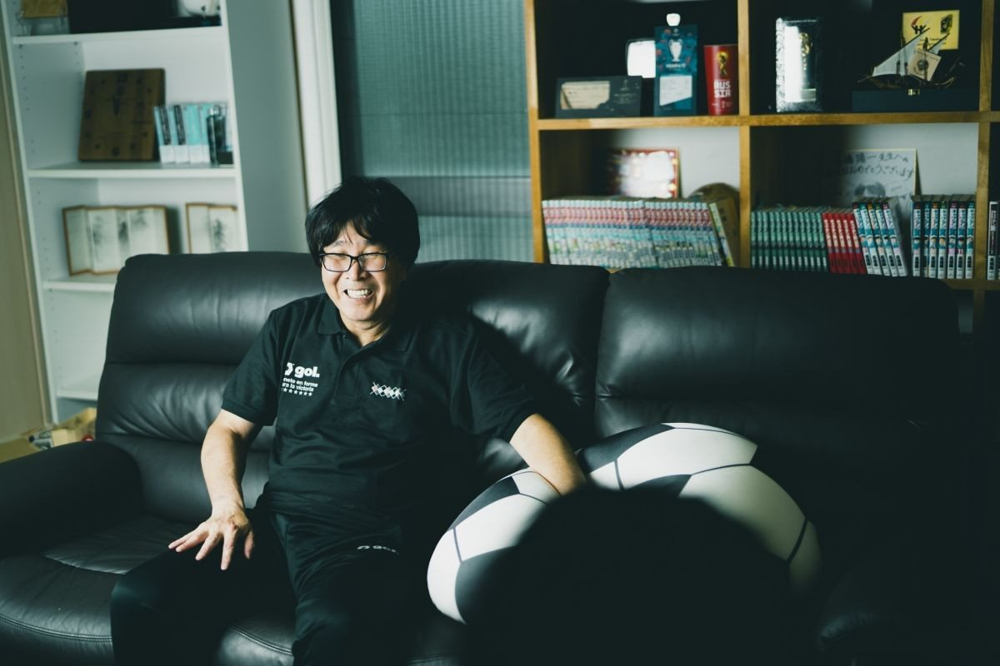

好球就想让它进门
2018 年的采访中您曾说「德国战、半决赛与决赛这 3 场，已下定决心画到最后」，结果却在半决赛后半段切换到了分镜连载，这是为什么？

因为到半决赛为止，比预想的要长。想到自己现在的年龄，我也有过「说不定画不到最后」的念头。
为什么会比预想的更长呢？
（日本对德国战之前的）巴西对德国战，是翼他们不上场的比赛，本来打算收得再短一点。但各国的对手们实在太有魅力，画着画着就很开心（笑）。不断追加计划外的场景，就收不住了。
过去的采访里您也说过「边画边画，比赛结果有时会和最初的构想不同」。《RISING SUN》里有没有从构想改变过的比赛？
结果没变。只是同样是平局，本来想画成 3-3 的，后来变成了 4-4、5-5。
很好奇是怎样的发展，让进球超出最初的构想？
《ドカベン》的水岛新司老师说过，本来没打算画本垒打，但画出了山田太郎绝妙的挥棒，就觉得「这绝对是本垒打吧」，于是改了（笑）。

是像被画面、被角色牵着走的感觉吗？
接近那种感觉。画出好射门就会想「这不进不对吧」。这样下去话数增加，比赛就难推进了。
话数超出预想不断增加的期间，对今后的构想也不断膨胀吧？
是的。所以「想画后面却怎么也推进不了」的焦躁感，一直都在。
切换到分镜连载时，您也考虑过保留「文字剧情」的选项吧？但光有文字，应该不会产生「画出帅气射门所以让它进球」这样的展开吧？
正如您所说。我是在脑中想象影像来画漫画的类型，用语言去表现那种感觉极其困难。反正画出来更快，于是就成了分镜连载的形式。
所谓「想象影像」，是在脑中让选手们动起来的感觉吗？
与其说是脑中，不如说是面对空白画稿时，足球场会浮现出来的那种感觉。
那是俯瞰整场比赛的感觉？还是漫画每一格的场景浮现出来？
两者都有。一边想着比分俯瞰整场比赛，一边琢磨「门前混战中防守球员在做什么」「日向这附近在伺机反击吧」这类事。当然，有时也会贴近选手、进入场景里去画。
即使无法连载，也想留下故事
作画耗时也是切换到分镜连载的理由之一，至今为止分镜和作画是怎样的时间分配？
分镜如果构想在脑中定下来，大概 1 天 1 话。作画铅笔稿要 1 天多，上墨 1 天最多 8 页。年轻时 1 天能画 10 页以上呢。
速度线也好、球鞋的区分也好，细致的地方全部由我自己来画——我一直都是这种风格，所以怎么都会花时间。
有没有想过增加助手比例、继续通常连载？
年轻时就该那样做。已经贯彻到现在这个地步，现在再拜托别人也……有这种心情。
这个分镜连载问世时，您对读者会有怎样的反响感到不安吗？
作为故事应该能传达，但「连载」这种形式能否成立，至今仍非常不安。不过既然决定用自己的分镜继续《队长小翼》，即使不能当作工作，也要作为毕生事业继续下去。
假设连载的地方没有了，您也会继续画分镜吗？
是的。总之只想留下《队长小翼》的故事。这样别人重新画成漫画也行，AI 来画也没关系。我在世时希望别这样做，但那之后就随你们了（笑）。

像去见朋友一样描绘角色
接下来想请教几位角色。西班牙代表米迦埃尔初登场时，在体育场前用赛格威带球盘带的场景成了话题。
现实中大概做不到（笑），但在漫画世界里，我想画出「说不定能做到呢」的那种界限感。过去的必杀技里，天空 Love Hurricane 也是一边想着「说不定能行」一边画的。
《队长小翼》初期，天空 Love Hurricane 对策里选手爬上球门柱的场景也很新颖。
那个可能有点做过头了（笑）。做过头会失败，这是从经验中学到的，所以那个分寸我一直在意。
米迦埃尔这个角色是怎样诞生的？
虽然觉得翼的对手已经出尽了，但作为作家必须推出新的对手形象。对米迦埃尔，我是抱着「不会有比这更强的对手了吧」的气势去画的。所以直到和翼交战都仔细描绘，相应的也花了时间，但投入的感情非常强。
新对手登场的同时，对手和队友在之后的系列里也持续登场，这也是《队长小翼》系列的魅力吧。
一旦画了就会对角色产生感情。一段时间不画就会想「说起来那家伙现在怎样了」，感到寂寞。我是像去见普通朋友一样去画他们的。
比如小学时代就和翼同队的石崎、森崎，总让人忍不住想「他们真有成为日本代表的实力吗？」——是因为您对他们有这份感情，才让他们一直活跃至今吗？
那当然也是原因之一。不过关于他们，我还有另一层想法。现实世界里不可能全是翼和米迦埃尔那样的天才吧。随着年岁渐长而淡出赛场的选手也有很多。但我还是想画出「光靠努力也能做到这一步」，石崎和森崎就是其中的代表。

翼、日向、岬、若林会在欧冠交锋？
大空翼 22 岁已效力西班牙巴塞罗那，拿下联赛冠军和 MVP。作为俱乐部球员似乎已达顶点，今后会怎样成长？
马德里奥运结束后，接下来想画欧冠篇。欧冠夺冠的话，也就接近金球奖（年度最佳球员）了吧。
巴萨还有作品中最强级别的巴西代表里瓦尔在，欧冠夺冠似乎不会轻易达成，不会有这种事吗？
当然，阻碍夺冠的对手又会登场（笑）。日向小次郎、岬太郎、若林也会移籍世界顶级球队、参加欧冠。那 4 人可能在四强交锋，之类的也有可能。
那个展开太热血了。到底几年后能读到呢（笑）。
真的呢（笑）。假设这次奥运篇日本夺冠，选手们应该会收到很多欧洲球队的报价。23 岁以下正容易成长，今后日本代表选手会越来越多地活跃吧。
那里您已经有具体的构想了吗？
是的，构想已经定好了。
过去的采访中您也说「也许会画到翼当上 FIFA 会长」。翼有了孩子，也能描绘下一代的活跃吧？
是呢，真想永远画下去（笑）。不过嘛，我心里的感觉是——日本代表在世界杯夺冠，大概就是故事的终点站了。
日本能在世界杯夺冠吗？
现实世界里，日本要夺得世界杯冠军门槛依然很高，您怎么看？
上一届世界杯，日本不是赢了西班牙和德国吗。虽然也有抽签分组之类的运气成分，但我觉得可能性并非为零。
顺便一问，关于作为球员的翼的原型，您在过去的采访中说过「是以马拉多纳、济科、普拉蒂尼这类所谓的 10 号球员为印象」。听说现代足球很难再诞生这样的球员，您如今是怀着怎样的心情看球的？
确实，现在的足球变成了以战术为先，但也不至于因此就看不下去，享受那个时代独有的足球就好。话虽如此，即便在这样的时代也还是有 10 号型球员的，我还是希望这样的球员能更活跃一些。
具体来说，是哪些球员呢？
西班牙的佩德里是我喜欢的球员。还有克罗地亚的莫德里奇，也是很有 10 号风范的球员。即便在以战术为先的环境里，王牌在最后终结比赛的那种快感，我认为无论什么时代都不会消失。

履行高桥阳一的职责
目前高桥老师还担任社会人足球俱乐部南葛SC的老板兼代表。运营球队的过程中有什么感触？
首先想到的就是——现实里可赢不了漫画里那么轻松（笑）。
——（采访者笑）
一开始我以为挺快就能升上 J 联赛，实际做了才知道没那么简单。现在球队参加关东足球联赛 1 部，相当于 J 联赛的第 5 级别。老实说，路还很长。
球队创立之初就打出「从葛饰走向 J 联赛」的口号，一直很重视与地域的关系。
我觉得足球果然还是一项扎根地域的运动。去欧洲、南美取材时就会发现，不只是顶级球队，当地的俱乐部也被人们深深爱戴着。我也希望南葛SC能成为这样的球队。
南葛SC的选手也好对手也好，果然都会有「这可是《队长小翼》的球队」这种意识吧？
是的。感觉对手会比平时更来劲，一副「绝不能输给《队长小翼》的球队」的样子（笑）。不过这也是我有心理准备才开始的，所以我希望去战胜这些。
听说作为球队主场的足球专用球场建设也在筹备中。
我认为要享受足球，专用球场无论如何都是必需的。若能在家乡建起一座足球专用球场，旁边再建一座《队长小翼》博物馆，让这座城市成为全世界热爱足球和《队长小翼》的人们聚集的地方，那就太好了。
升上 J 联赛、建设球场，再加上《队长小翼》的完结，必须做的事真不少呢。
多得不得了（笑）。但每一件都绝不是空谈的梦想，而是必须实现的具体目标。我一直在思考怎样才能履行好自己的职责——就像别人会说「这种事就该由高桥阳一来做」。
背负着《队长小翼》这样世界级的内容，对于这份职责不会有压力吗？
那方面当然会有。不过，硬去做做不到的事也没意义，我觉得踏踏实实做自己能做的就好。无论做什么，不健康就无从持续，所以这一点我会多少留心，今后也这样走下去。
期待着众多梦想实现的那一天。今天百忙之中，感谢您接受这么久的采访。
非常感谢！
